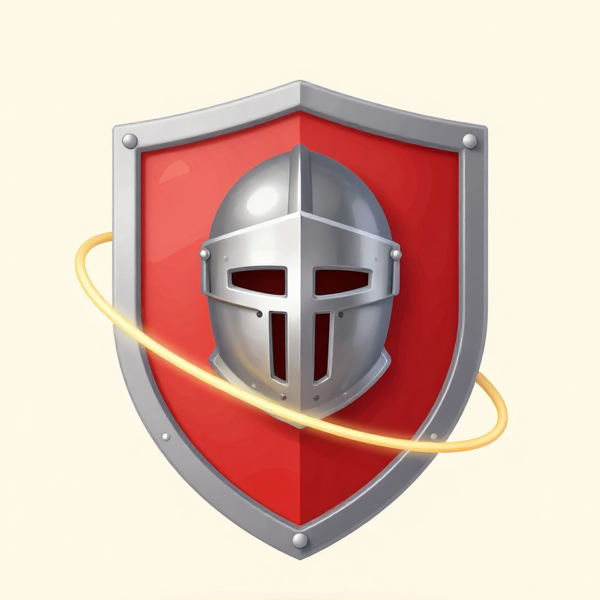

# dg rule DG-001, compiled to Rego, loaded into OPA (excerpt) package data_governance triggered_rules contains "DG-001" if { some flow in input.flows flow.event_type == "external_sharing" some _DG_001_item_0 in flow.data_items every t in ["PII"] { t in _DG_001_item_0.regulatory_tags } some _DG_001_dest_0 in flow.data_destinations _DG_001_dest_0.data_destination_trust_level == "UNTRUSTED_EXTERNAL" every c in ["external"] { c in _DG_001_dest_0.data_destination_categories } } _rule_decisions := {"DG-001": {"risk_level": "critical", "enforcement_type": "block", …}, …}

Each agent's tools, from its own description.
Classifies the data; personal and restricted data stay where company policy says.